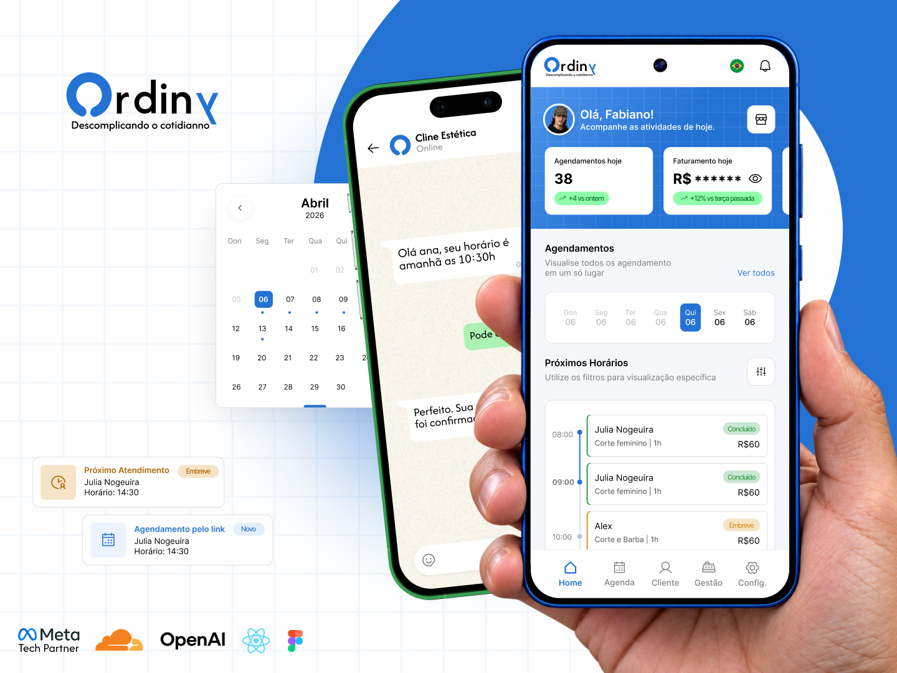
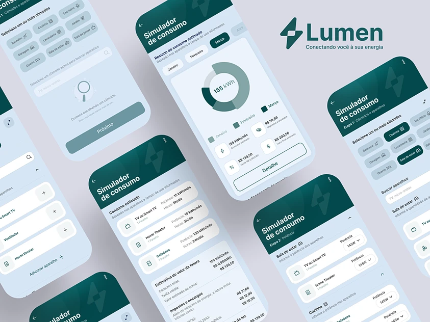
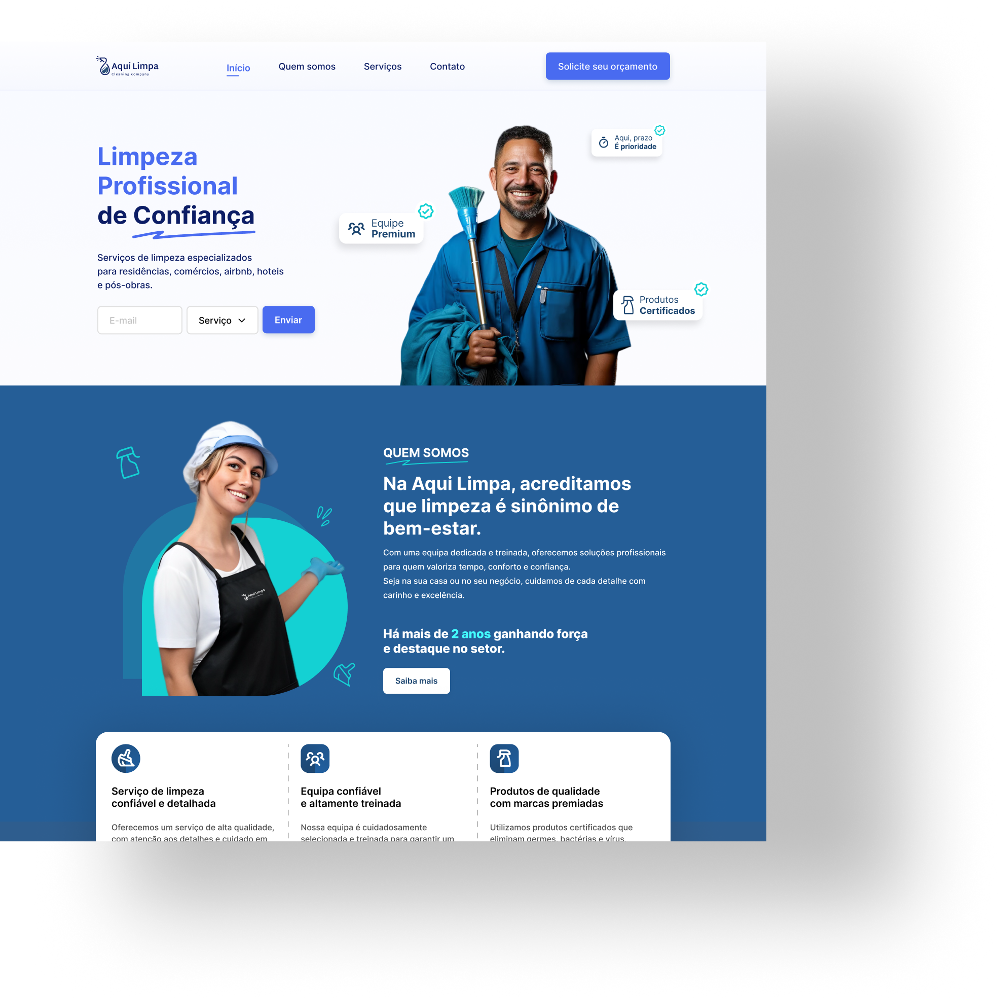

SAAS / PRODUTO DIGITAL
Ordiny
Do design à aplicação: um SaaS que conecta produto, UX/UI e desenvolvimento.
Produto · UX/UI · Desenvolvimento
Ler estudo de caso ↗PORTFÓLIO / 04 PROJETOS
Produtos, interfaces e experiências em finanças, serviços e consumo de energia.

SAAS / PRODUTO DIGITAL
Do design à aplicação: um SaaS que conecta produto, UX/UI e desenvolvimento.
Produto · UX/UI · Desenvolvimento
Ler estudo de caso ↗Antecipar é simples.
Dar segurança antes do clique
é o desafio.

FINTECH / APLICATIVO
Antecipação de fretes com foco em clareza e segurança na jornada financeira.
UX/UI · Jornada financeira
Ler estudo de caso ↗
UTILITIES / SIMULADOR
Uma interface para explorar e compreender o consumo de energia.
UX/UI · Visualização de informação
Ver projeto ↗
SERVIÇOS / WEBSITE
Um site que apresenta serviços de limpeza com informações claras e uma navegação organizada.
UI · Hierarquia de conteúdo
Ver projeto ↗Vamos conversar sobre produto, design e implementação.